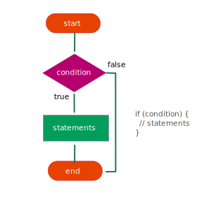
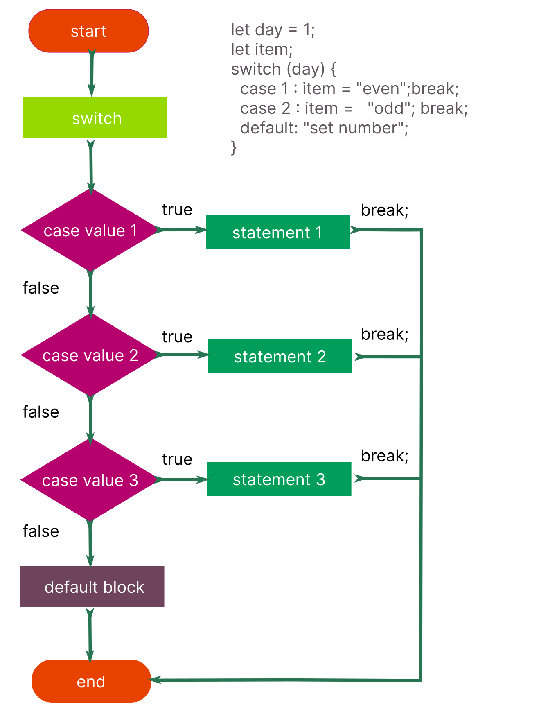

Логічні оператори використовуються для перевірки умов з багатьма
виразами, наприклад в операціях порівняння.
Приведення типів
У логічних операціях здійснюється приведення типів операндів до true або
false. Приведення відбувається, якщо в коді виявлений логічний оператор.
Truthy і Falsy - терміни, які використовуються для тих
значень, які в логічній операції приводяться до true або false, хоча
спочатку не були булями. Запам'ятайте: 6 хибних (falsy)
значень, що приводяться до false у логічному перетворенні: 0, NaN, null,
undefined, порожній рядок і false. Абсолютно все інше приводиться до
true.
Логічні оператори
Існує три логічні оператори, які використовуються для перевірки
виконання множинних виразів.
Логічне «І»
Оператор && приводить всі операнди до буля і повертає значення одного з
них. Лівий операнд - якщо його можна привести до false, і правий - в
інших випадках. Тобто, логічне «І» зупиняється на хибному і повертає те,
на чому зупинилось, або останній операнд.
Виконуючи логічне «І», правий операнд може не обчислюватися у випадку,
якщо лівий був приведений до false.
Логічне «АБО»
Оператор || приводить всі операнди до буля і повертає значення одного з
них. Лівий операнд - якщо його можна привести до true, і правий - в
інших випадках. Тобто, логічне «АБО» зупиняється на правді і повертає
те, на чому зупинилося або останній операнд.
Виконуючи логічне «АБО», правий операнд може не обчислюватися у випадку,
якщо лівий був приведений до true.
Логічне «НЕ»
Логічне «НЕ» - це унарний оператор, який виконує операцію над одним
операндом з правої сторони. Оператор ! приводить операнд до буля, якщо
необхідно, а потім робить інверсію - змінює його на протилежний true ->
false або false -> true.
Розгалуження використовуються для виконання різноманітного коду, залежно
від умови. Принцип роботи простий - результат умови приводиться до буля
true або false, після чого потік програми спрямовується в ту або іншу
гілку.
Інструкція if

Вхідні дані, які приводяться до буля, називаються умовою. Умова
ставиться після оператора if в круглих дужках. Якщо умова приводиться до
true, то виконується код у фігурних дужках тіла if.
let cost = 0;
const subscription = "pro";
if (subscription === "pro") {
cost = 100;
}
console.log(cost); // 100
Якщо умова приводиться до false, код у фігурних дужках буде пропущений.
let cost = 0;
const subscription = "free";
if (subscription === "pro") {
cost = 100;
}
console.log(cost); // 0
Інструкція if...else
Розширює синтаксис if таким чином, що якщо умова приводиться до false,
виконається код у фігурних дужках після оператора else.
Блок else...if дозволяє додати після else ще один оператор if з умовою.
В кінці ланцюжка може бути класичний блок else, який виконається лише у
тому випадку, якщо жодна умова не приведеться до true.
Тернарний оператор використовується у якості синтаксично коротшої заміни
інструкції if...else, коли одній і тій самій змінній необхідно присвоїти
різні значення за умовою.
Межі застосування switch обмежені задачами з одним загальним запитанням
(що порівнювати) і рядом варіантів відповідей (з чим порівнювати).

Його синтаксис складається із блоку switch(значення) -
що потрібно порівняти і набору окремих випадків case значення - з чим
потрібно порівняти. Для порівняння використовується оператор строгої
рівності ===. Тобто, не можна порівняти більше або менше, лише рівність.
Значення в блоці switch(значення) - рядок або число,
яке порівнюється щодо строгої рівності з усіма значеннями в блоках
case значення по черзі, зверху вниз. Оператор
break в кінці кожного блоку
case необхідний, щоб перервати подальші перевірки і
одразу перейти до коду за switch у тому випадку, коли
перевірка рівності повернула true. Якщо жодного збігу
значень не відбулося, необхідно виконати код за замовчуванням, як і в
блоці else для інструкції if...else.
Для цього, після усіх блоків case додається блок
default. Оператор break після блоку
default не потрібен, тому що це вже остання операція,
яка буде виконана в switch і управління буде передано
коду після нього.
let cost;
const subscription = "premium";
switch (subscription) {
case "free":
cost = 0;
break;
case "pro":
cost = 100;
break;
case "premium":
cost = 500;
break;
default:
console.log("Invalid subscription type");
}
console.log(cost); // 500
Логічні оператори
function shuffleArray(array) {
// Копіюємо вхідний масив, щоб не змінювати оригінальний
let shuffledArray = array.slice();
// Алгоритм Fisher-Yates
for (let i = shuffledArray.length - 1; i > 0; i--) {
let j = Math.floor(Math.random() * (i + 1));
[shuffledArray[i], shuffledArray[j]] = [shuffledArray[j], shuffledArray[i]];
}
return shuffledArray;
}
function addOperatorsAfterOddIndices(array) {
let resultArray = [];
for (let i = 1; i < array.length; i += 1) {
resultArray.push(array[i]);
// Перевіряємо, чи індекс непарний
if (i !== 0 && i !== array.length - 1) {
// Випадковим чином додаємо ' && ' або ' || '
let randomOperator = Math.random() > 0.5 ? ' && ' : ' || ';
resultArray.push(randomOperator);
}
}
return resultArray.join('');
}
let arr = [0, NaN, 'null', 'undefined', false, 7, 0, 9, 1];
let shuffledArr = shuffleArray(arr);
let modifiedArr = addOperatorsAfterOddIndices(shuffledArr);
console.log(shuffledArr);
console.log(modifiedArr);